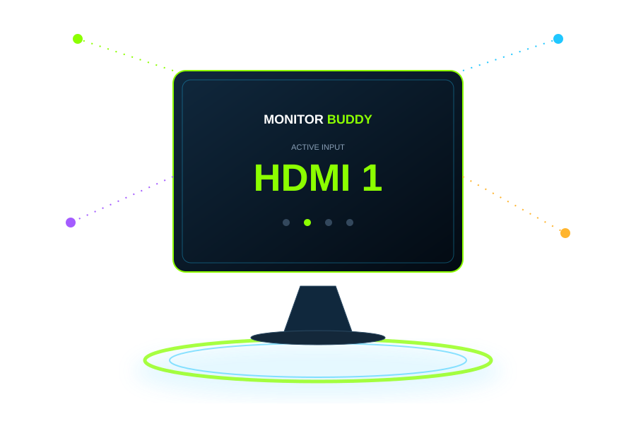

Detects Monitor
Finds your DDC/CI-compatible monitor and available input controls.
 MONITOR BUDDYOne Shortcut. Total Control.
↓ Download Now
MONITOR BUDDYOne Shortcut. Total Control.
↓ Download Now
WINDOWS • DDC/CI • FREE
A lightweight Windows utility that lets you switch compatible monitor inputs using DDC/CI and customizable keyboard shortcuts.
♢ Safe. Secure. Verified.
VirusTotal 0/64 Detections

SIMPLE & POWERFUL
Behind the scenes, simple. For you, effortless.
Finds your DDC/CI-compatible monitor and available input controls.
Your custom key combination triggers the input switch instantly.
Monitor Buddy sends the command needed to change the display input.
Your monitor switches to the selected input. That's it.
SEE THE IDEA
Monitor Buddy turns a monitor-control command into a workflow you can trigger from Windows. The visual below is a product illustration — your actual monitor and supported inputs determine what is available.
> monitor detected
> compatible input found
> shortcut received: CTRL + ALT + SHIFT + F2
> input switched ✓
MADE FOR THE ONE-SCREEN SETUP
Configurable keyboard shortcuts make changing inputs a simple action.
Keep input mappings organized for compatible displays.
Discover DDC/CI input values exposed by your monitor.
No traditional installer. Extract the release and run the app.
THE JOURNEY
Five small chapters. Click one to open the full story below.
Click another chapter to change the story card.
COMPATIBILITY
Monitor Buddy controls input switching through DDC/CI. Compatibility depends on your monitor firmware, connection path, GPU/driver behavior, and which controls your display exposes.
RELEASE SECURITY
The public MonitorBuddy-App.zip release was checked with VirusTotal and received 0 / 64 detections at the time of analysis.
View VirusTotal Results8cfab64e6480f855f83a78f480902a9d2b9f030c6606b47297ee3ba5d3dfae34READY TO TAKE CONTROL?
Portable. No traditional installer. Just download, extract, and run.
FAQ
No. Monitor Buddy is designed to work offline after download.
No. The monitor must expose the required input control through DDC/CI, and compatibility can vary by display and connection path.
The published release is portable: download, extract, and run.